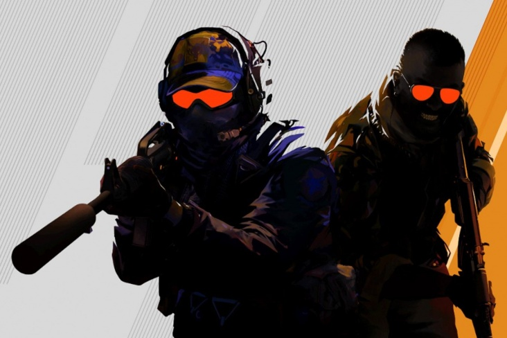

кс2
CS 2 мой САМЫЙ ЛЮБИМЫЙ ШУТЕР! ИНТЕРЕСТНЫЙ ФАКТ У команды Контер-Террористов всего два комплекта defuse, которые выдаются двум случайным игрокам. При отсутствиии бронижелета граната, брошенная под ноги, снимает 100 ХП. А с бронижелетом всего 10-20 ХП. .
Музыка из cs2
Офис разработчика
Подробно о cs2
Counter-Strike 2 (сокр. CS2; с англ. — «Контрудар 2») — компьютерная игра в жанре многопользовательского тактического шутера от первого лица, разработанная компанией Valve. Она стала 5-й игрой в серии Counter-Strike и заявляется как бесплатное обновление к Global Offensive
Игра отличается крупными техническими улучшениями по сравнению с Global Offensive, включая переход с игрового движка Source на Source 2, улучшенную графику и новую клиент-серверную архитектуру. Кроме того, многие карты из Global Offensive были обновлены, чтобы использовать функции Source 2, а некоторые карты были полностью переработаны.
Valve анонсировала игру 22 марта 2023 года, объявив, что разработчики готовят релиз на лето 2023 года. Релиз игры состоялся 27 сентября 2023 года, заменив собою Global Offensive в Steam.
Кроме вышеупомянутого перехода на новый игровой движок Source 2, улучшения включают переработанные карты и улучшенные аудио-визуальные эффекты, а также изменения в использовании дымовых гранат и многое другое. Освещение, текстуры и дизайн были изменены.
Valve сгруппировали новые карты по трём категориям, согласно степени переработки.
Эталонные. Эти карты получили минимальные изменения, такие как новое освещение и улучшение читаемости моделей. Улучшенные. Это — карты из Global Offensive, которые используют новое освещение Source 2 и новые текстуры и свет. Воссозданные с нуля. Эти карты были полностью переработаны, используя возможности нового движка Source 2.
Компания Valve сообщила: «Дым теперь взаимодействует с другими игровыми процессами, создавая новые возможности. Пули и гранаты могут производить дым, на короткое время закрывая линию обзора или расширяя окклюзию». Дым также может «естественным образом заполнять пространство» и реагировать на освещение.
В игре была произведена переработка графического интерфейса, в том числе главного меню.
Изменению подверглась и клиент-серверная архитектура, теперь обновление данных о состоянии игроков не привязано к так называемым тикам, как это было ранее. Такую архитектуру разработчики назвали «подтиковой».